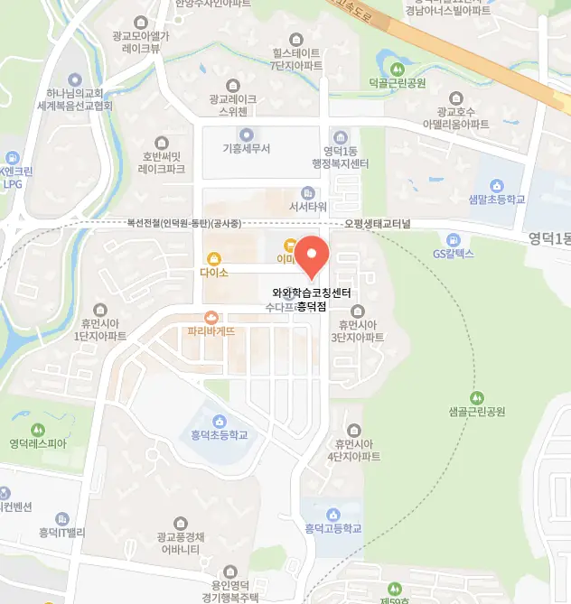

학부모님은 영덕동 초4 수학학원을 고를 때 아이의 학습 목표와 현재 수준을 먼저 점검해요. 우리 동네는 교통이 편리하고 안전한 거리라 이동이 부담 없어요. 선생님은 교육 경력과 수업 방식을 투명하게 공개해 신뢰를 얻고 있어요. 전문가들은 체험 수업을 통해 학습 분위기를 직접 체감해 보는 것을 권장해요. 영덕동 초4 수학학원은 피드백 시스템이 활발히 운영돼 아이가 스스로 성장할 동기를 찾을 수 있게 돕고 있어요. 마지막으로 비용 대비 효과를 비교해 보는 것이 현명한 선택이라고 생각해요. 보호자는 주변 영덕동 초4 수학학원의 평판을 온라인 커뮤니티에서 조사하고, 실제 수강생 부모와 대화를 시도해요. 학생은 직접 교재와 강의 자료를 살펴보며 흥미를 느끼는지 스스로 판단해요. 또한, 영덕동 초4 수학학원은 학습 일정과 방과후 활동을 어떻게 조율하는지 확인해 보는 것이 중요해요. 이러한 과정을 거치면 아이에게 맞는 최적의 교육 환경을 선택할 수 있겠어요.
초등 저학년은 기초 개념을 놀이와 이야기로 연결해 흥미를 자극하는 수업이 효과적이에요. 초등 고학년은 교과서 중심 학습에 자율적 탐구 과제를 병행해 이해도를 높이는 전략이 필요해요. 중학생은 핵심 개념을 빠르게 정리하고 반복 학습을 통해 실전 감각을 키우는 것이 중요해요. 고등학생은 심화 문제와 모의고사를 통해 시험 대비 전략을 체계화하는 과정이 필수적이에요. 전체 학년에서는 학습 습관과 시간 관리 능력을 꾸준히 점검하며 성장 단계를 맞춤 지원하는 것이 핵심이에요. 영덕동은 다양한 연령층이 모이는 지역 특성상 영덕동 초4 수학학원 선택 시 연령별 맞춤 프로그램을 제공하는 곳을 찾는 것이 현명해요.
와와학습코칭센터는 질문 노트를 활용해 스스로 오답을 정리하고 다시 복습하는 방식을 강조해요. 주요 대상은 개념 이해가 부족한 초중고 학습자이며, 커리큘럼은 기본 개념 정리 응용 문제 풀이 피드백 단계로 구성돼요. 수강료는 피아노 초급 140,000원, 중급 150,000원으로 책정돼 있어 가성비가 뛰어나요. 자연수의 성질을 이해하고 개념 간 연결 고리를 만들도록 지도해 학습 동기가 상승해요. 단순 강의가 아니라 학생 스스로 생각하도록 이끌어 주는 점이 큰 차별화 포인트예요. 또한 정기적인 학습 진단을 통해 개인 맞춤형 피드백을 제공해요.
| 학원명 | 와와학습코칭센터 |
| 수강료 | 피아노(초급) 140,000원 | 피아노(중급) 150,000원 |
CURRICULUM
아이들이 자주 틀리는 정답률이 낮은 유형을 집중적으로 보완하는 수업을 진행해요. 개념과 개념 사이의 연결 고리를 시각화하여 보여주기 때문에 단편적인 지식으로 남지 않고 하나의 큰 덩어리로 체화되거든요. 이렇게 연계도를 활용하면 새로운 문제가 나와도 당황하지 않고 해결 전략을 세울 수 있답니다. 마치 지도를 보며 길을 찾는 것처럼 학습의 흐름을 한눈에 파악할 수 있게 하는 것이 특징이에요. 단순 암기 위주의 주입식 교육이 아니라 이해를 바탕으로 한 응용력을 키우는 데 주력하여 학교 시험이나 내신 대비에도 아주 강점을 보이는 커리큘럼이랍니다.
영덕동 주변 학생들은 영덕동 초4 수학학원 선택 단계에서 정보 과부하로 핵심을 놓치는 경우가 많아요. 등록 후에는 과도한 과제량 때문에 학습 동기가 저하되는 사례가 발견돼요. 학습 관리 단계에서는 자기주도 계획이 부족해 꾸준히 이어가지 못하는 경우가 빈번해요. 이러한 실수를 예방하려면 단계별 목표 설정과 피드백 체계를 명확히 하는 것이 중요해요.
한 달 수업을 하나의 이야기처럼 연결해 전체 흐름을 파악하기 쉽게 설계해요. 주간 플래너와 체크리스트를 활용해 학습 진행 상황을 눈에 보이게 관리해요. 개별 차이를 고려해 맞춤형 과제를 제공하고, 공통된 개념은 카드로 정리해요. 수업 중에는 요약 발언을 유도해 이해도를 즉시 확인하고, 즉각적인 피드백을 제공해요. 이러한 전략은 학습 동기를 유지하면서도 효율적인 지식 습득을 가능하게 해요. 학생 스스로 목표를 설정하고 달성 경험을 쌓으면 자신감이 자연스럽게 상승해요. 교사는 지속적인 관찰을 통해 학습 패턴을 분석하고, 필요한 지원을 맞춤 제공해요. 결과적으로 장기적인 성취와 자기주도 학습 능력이 동시에 향상돼요.
중학교 1학년으로 꾸준히 수업에 참여하지만 발표 시 위축되는 아이에게 적합해요. 시험 대비 기간을 짧게 잡아 스트레스를 받는 경우에도 체계적인 일정 관리로 안정적인 성장을 지원해요. 자기 주도 학습 능력을 키우고 싶어 하는 학생에게 특히 도움이 돼요
한 부모님은 상담 과정에서 영덕동 초4 수학학원 측이 학생과 부모의 의견을 조율해 주는 모습이 따뜻했어요. 또 다른 학생은 작은 발전이 쌓여 큰 성취감으로 이어졌다고 전했어요. 또 다른 후기에서는 목표 구체화 과정이 자기 주도성을 크게 키워 줬다고 말했어요. 마지막으로 한 학부모는 교사의 빠른 대응이 신뢰를 쌓아 매일 웃음이 넘친다고 강조했어요